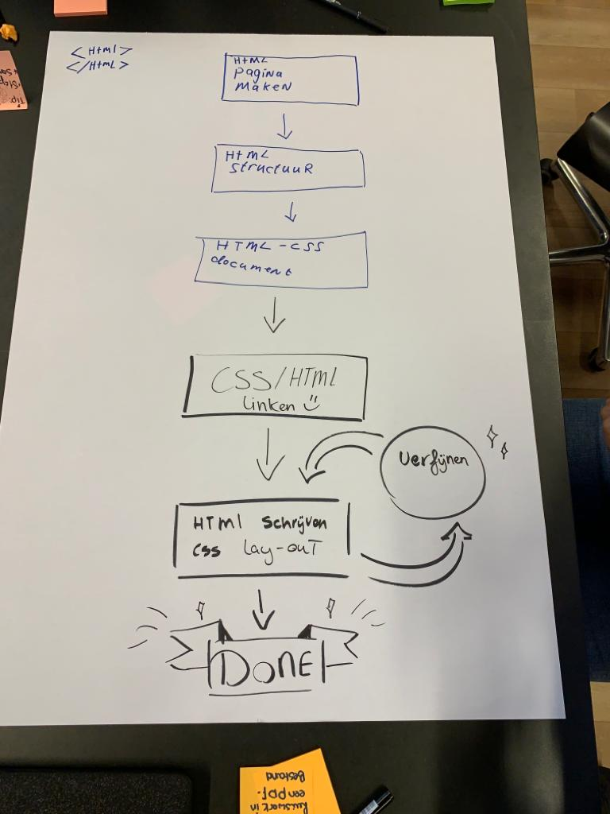

HTML CSS stappenplan
Hieronder leg ik het diagram uit
- 1. Maak allereerst een index.html pagina.
- 2. Schrijf je html structuur in het index.html bestand.
- 3. Maak daarna een .css bestand aan.
- 4. Link vervolgens het stylesheet document aan de index.html bestand.
- 5. Stijl de geschreven HTML structuur
- Verfijn elke keer het component door de HTML-structuur en css aan te passen.
